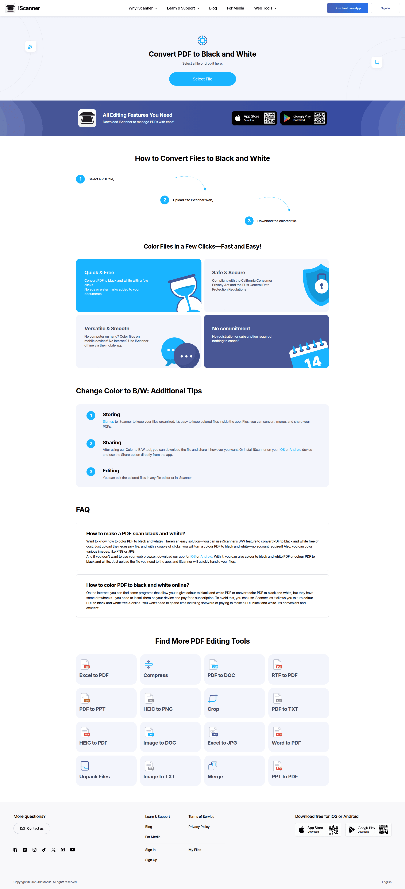

Lazyweb Design Improve
DuplexPrint desktop screen critique
The current screen is usable but visually reads as a generic white-card admin panel. For this product, that is the wrong emotional frame. DuplexPrint is not a dashboard. It is a guided physical task assistant. The UI should feel like a focused print ritual: load document, confirm printer, run pass 1, reload paper, run pass 2.
What is weak right now
- The page has no clear primary moment. The eye bounces between four equal white cards instead of locking onto one guided action.
- The left sidebar spends too much width on passive metadata while the main action area feels underpowered.
- The tone is neither tool-like nor premium. Beige background plus generic rounded cards reads like a template rather than a deliberate utility.
- The workflow lacks visible progression. For a duplex-print task, step state is core UX, not secondary copy.
- The printer setup and document selection should feel like inputs to a machine, not like content blocks in a landing page.
Recommended direction
References used
I filtered for references whose visionDescription directly supported the changes:
upload-first flows, guided onboarding surfaces, and explicit wizard progression.

iScanner
Useful because the screen centers one obvious action: select a file and move to the next procedural step.

Userpilot
Useful because it organizes setup and guidance as one coherent system instead of scattering importance across equal cards.

Chameleon
Useful because the wizard framing makes a sequence feel like one guided path rather than several disconnected panels.
Concrete redesign for DuplexPrint
- Left rail: app identity, learned-printer trust message, small printer profile list.
- Main header: file name, printer badge, profile status, and a compact 5-step progress strip.
- Main body: one large “action deck” card with the current step, instructions, and the single primary button.
- Supporting panels: document summary and printer settings as compact chips, not large content blocks.
- When printing starts: replace the setup card with a pass-specific card and a paper-handling illustration or mini diagram.